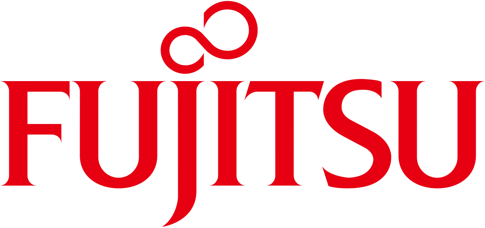
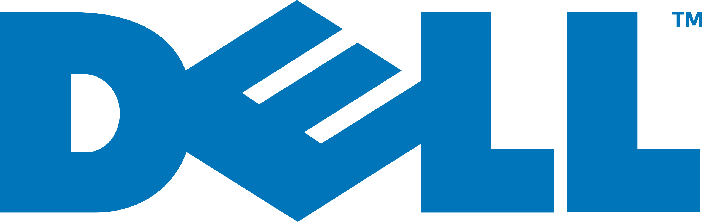

TechSupply Solutions è un'azienda leader nella fornitura di attrezzature informatiche per aziende di tutte le dimensioni. Con sede a Roma e Milano,
ci impegniamo a fornire soluzioni tecnologiche di alta qualità che migliorano l'efficienza operativa e supportano la crescita dei nostri clienti.
Servizi
Fornitura di prodotti hardware
Computer e Laptop: Vendita di computer desktop e laptop delle migliori marche, personalizzabili in base alle esigenze aziendali.
Periferiche: Fornitura di stampanti, scanner, monitor, tastiere e mouse.
Networking: Soluzioni per reti aziendali, inclusi router, switch e access point.
Software e Licenze
Software Gestionali: Vendita e installazione di software ERP e CRM per la gestione delle risorse aziendali.
Licenze Software: Fornitura di licenze per software antivirus, sistemi operativi e applicazioni di produttività.
Assistenza tecnica
Supporto Remoto: Assistenza tecnica via remoto per risolvere problemi informatici in tempo reale.
Manutenzione Programmata: Servizi di manutenzione preventiva per garantire il corretto funzionamento delle attrezzature.
Consulenza IT
Analisi delle Esigenze: Valutazione delle necessità tecnologiche delle aziende per fornire soluzioni su misura.
Pianificazione IT: Sviluppo di strategie IT a lungo termine per ottimizzare le risorse tecnologiche.
Progetti
Ecco alcuni dei nostri progetti recenti:
Progetto "Smart Office"
TechSupply Solutions sta lanciando un nuovo progetto chiamato "Smart Office", che mira a fornire soluzioni tecnologiche integrate per ambienti di lavoro moderni. Questo progetto include:
Installazione di sistemi di videoconferenza avanzati.
Implementazione di tecnologie IoT (Internet of Things) per il monitoraggio delle attrezzature.
Creazione di spazi di lavoro collaborativi con tecnologia all'avanguardia.
Espansione del Servizio Clienti
Per migliorare ulteriormente l'assistenza ai clienti, stiamo sviluppando una nuova piattaforma online che consentirà ai clienti di:
Richiedere supporto tecnico in modo semplice e veloce.
Monitorare lo stato delle loro richieste.
Accedere a risorse utili come guide e tutorial.
Com'è composto il nostro organico
Team Management
CEO - Marco Rossi: Fondatore e CEO con oltre 15 anni di esperienza nel settore IT. Marco è responsabile della visione strategica dell'azienda.
COO - Laura Bianchi: Chief Operating Officer con un forte background nella gestione delle operazioni aziendali. Laura si occupa della supervisione quotidiana delle attività.
Team Tecnico
Responsabile IT - Luca Verdi: Esperto in infrastrutture IT e gestione dei sistemi. Luca guida il team tecnico nella fornitura di supporto e consulenza ai clienti.
Tecnici Informatici: Un team composto da cinque tecnici altamente qualificati che offrono assistenza remota e onsite ai clienti.
Team Vendite e Marketing
Marketing Specialist - Giovanni Ferri: Con una vasta esperienza nel settore vendite, Giovanni guida il team vendite nella creazione di relazioni solide con i clienti.
Tecnici Informatici: Esperto in marketing digitale, Giovanni si occupa della promozione dei servizi dell'azienda attraverso canali online e offline.
Partner con cui collaboriamo
Per offrirti le migliori prestazioni, collaboriamo con le migliori marche per una maggiore affidabilità


Le nostre sedi
Abbiamo due sedi operative, la prima sede innaugurata nel 2004 a Roma e la più moderna innaugurata nel 2015 a Milano.
Via Cristoforo Colombo 422, 00145 Roma | Viale Liguria 65, 20093 Milano